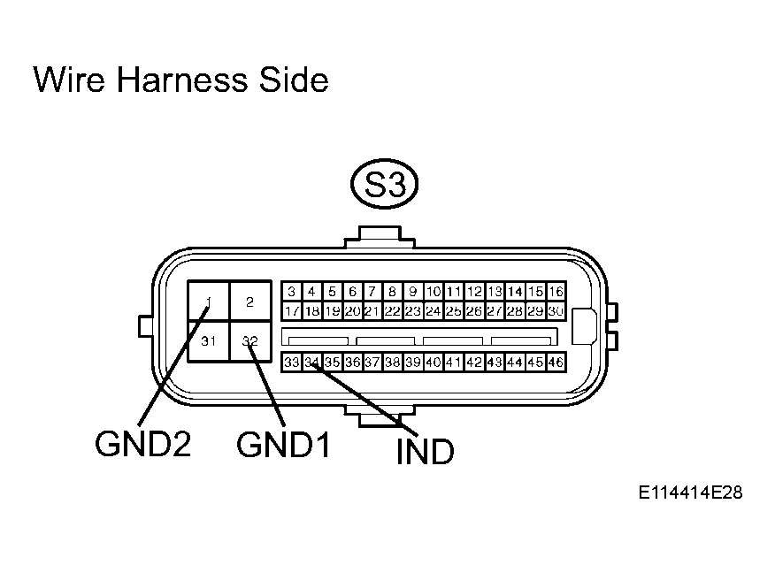

Inspection Procedure
- CHOOSE DIAGNOSIS METHOD
- Choose the diagnosis method.
Method
METHOD REFERENCEMethod Proceed to Using intelligent tester A Not using intelligent tester B
B: Go to step 4
A: Go to next step
- Choose the diagnosis method.
- PERFORM ACTIVE TEST BY INTELLIGENT TESTER (SLIP INDICATOR LIGHT)
- Select the ACTIVE TEST, generate a control command, and then check that the SLIP indicator light illuminates.
Skid control ECU with actuator
ITEM VEHICLE CONDITION DIAGNOSTIC CHARTItem Vehicle Condition/Test Details Diagnostic Note SLIP INDI LIGHT F Turns SLIP indicator light ON / OFF Observe combination meter
NG: Go to step 4
OK: Go to Next Step
- Select the ACTIVE TEST, generate a control command, and then check that the SLIP indicator light illuminates.
- CHECK SLIP INDICATOR LIGHT
- Check that the SLIP indicator light turns on for 3 seconds soon after the ignition switch is turned ON.
OK: END
NG: Go to Next Step
- CHECK WIRE HARNESS (SKID CONTROL ECU - BATTERY AND BODY GROUND)
- Disconnect the S3 ECU connector.
- Measure the voltage of the wire harness side connector.
Standard voltage
TESTER CONNECTION SPECIFIED CONDITIONTester Connector Condition Specified Condition S3-34 (IND) - S3-32 (GND1) or S3-1 (GND2) Ignition switch ON 10 to 14 V HINT:
When replacing the skid control ECU with actuator, perform the zero point calibration (see CALIBRATION ).
NG: REPAIR OR REPLACE HARNESS AND CONNECTOR

Courtesy of © TOYOTA, LICENSE AGREEMENT TMS1002OK: REPLACE BRAKE ACTUATOR ASSEMBLY